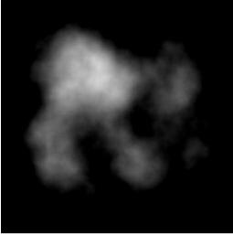
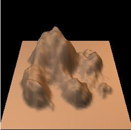
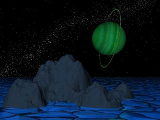
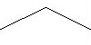
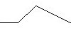
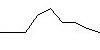
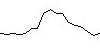

Geomorph is a height field generator and editor for the Linux
operating system.
A height field is a kind of topographic map. It is a 2D
projection of a 3D landscape.
Geomorph generates square images and shows a 3D preview of the
resulting landscape. The resulting 2D image can be processed with
a tool like Povray for rendering the landscape.
| Height field |
Preview |
Povray
rendering |
|  |
 |
 |
See also the Gallery.
Povray scenes used in the author's part of the gallery are
included in the Geomorph
package.
Geomorph actually exists in an alpha stage, localized in French, English and German. Here are some screenshots. It is generally stable.
Its main features are, for now:
The Geomorph documentation is
mainly made up of the tutorials and the guides of this web site.
Geomorph creates height fields by distorting a surface in a random way. Distortions are applied at progressively decreasing scale levels.
Suppose that we start from a flat surface of 512x512 pixels. In a
first step, the surface center is moved vertically with a randomly
chosen altitude, a bit like pinching a sheet. In a second step, the
surface is divided in four parts, and the center of each part is also
moved randomly above or under its current level. In a third step, each
of this four parts is also divided in four, for a total of sixteen
surfaces, which are then pinched in their middle, and so on until the
subdivided surfaces have a 3 pixel diameter or less.
A slice taken in the whole surface would roughly have this look:
| Step 1 |
Step 2 |
Step 3 |
Step 4 |
|  |
 |
 |
 |
Usually, unlike this example, the surface is smoothed at each step
(much more like the pinching of the sheet).
This subdivision method is not unique to Geomorph, it is frequently
used for generating artificial height maps. Applying the same process
at progressively decreasing scales gives a so-called "self-similar"
surface. This surface is characterized by a fractional dimension (or
fractal), which means, in this case, a dimension between 2 and 3.
Geomorph also provides a variation on this process, in which
surfaces are added to a base surface at progressively decreasing
scales. The added surfaces are derivated from a primitive surface,
usually a gaussian bell, or from any image chosen by the user.
Geomorph is an answer to my own creative requirements under Linux,
for aesthetical purposes. The available tools when I decided to work on
this project (at the end of 2000, I think) were lacking
functionnalities or stability.
I am in part motivated by an interest towards the biosphere and the
processes which make it evolve. This is somehow for me an extension of
photography.
Developing software is also a self-actualizing activity of creation.
I think we are still in the infancy of art creation by digital
means. It is still possible, and sometimes required, to develop our own
tools. This is not unlike the Middle-Age or Renaissance painters who
prepared their pigments themselves.
I already have a lot of ideas waiting to be implemented. These ideas
are answers to specific requirements for landscapes creation. Here are
some of them, in a jumble (without any promise!):
Contact: Patrice St-Gelais